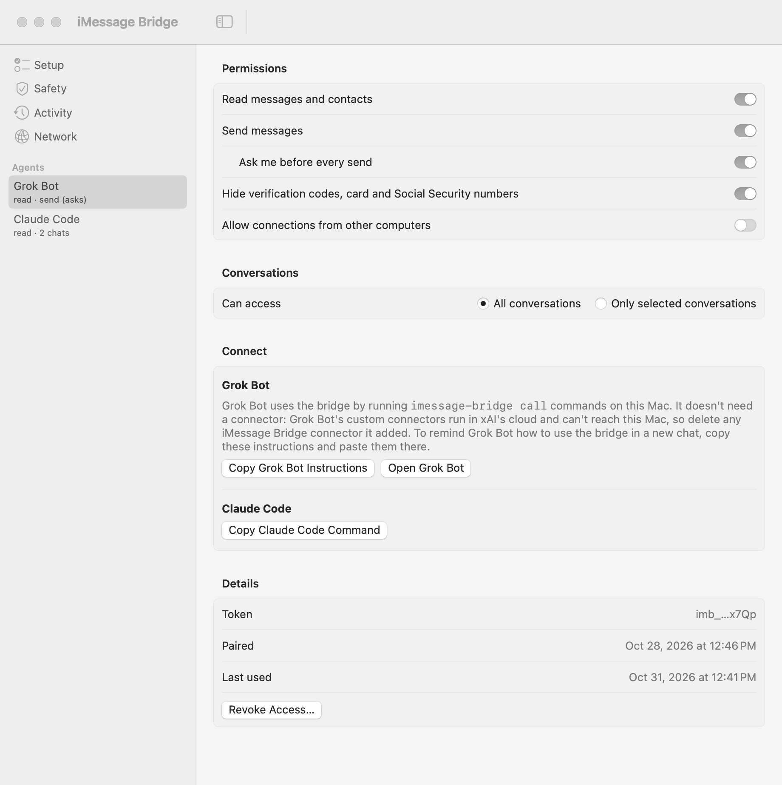
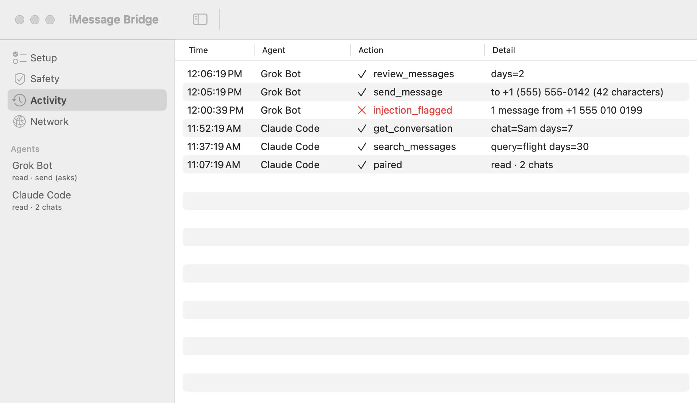

Advanced setup
Everything the quick install leaves out: how it works, manual pairing, client configuration, safety settings, network access and the CLI.
- How it works
- Building from source and signing
- Pairing by hand
- Connecting MCP clients
- Agent permissions
- MCP tools
- Safety settings
- Network access
- CLI reference
- Files, updating, uninstalling
- Security notes
How it works
The app runs an MCP server at 127.0.0.1:7542/mcp. It reads ~/Library/Messages/chat.db and your contacts read-only, and sends through Messages.app with AppleScript. Full Disk Access is granted to the app alone, so agents only see what the app hands them.
Agents connect either over HTTP with a bearer token, or through the imessage-bridge mcp command, a stdio MCP server that forwards requests to the app and adds the agent's token.
Building from source and signing
The quick install uses a signed, notarized release. To build it yourself, you need the Xcode Command Line Tools (xcode-select --install); Xcode itself isn't needed.
git clone https://github.com/cmer/imessage-bridge.git
cd imessage-bridge
./scripts/install.shinstall.sh builds and signs the app, installs it to /Applications/iMessage Bridge.app, links the CLI at ~/.local/bin/imessage-bridge and opens the app.
scripts/build.sh signs with the first Developer ID Application identity in your keychain, or $SIGN_IDENTITY if set, and otherwise signs ad hoc. With a stable Developer ID, Full Disk Access survives rebuilds. With ad hoc signing, you have to grant it again after every rebuild.
To have an agent do the whole install, point it at AGENT_SETUP.md.
Pairing by hand
Instead of pasting the prompt into an agent, you can pair from Terminal:
imessage-bridge pair --name "Claude Code" --read # read only
imessage-bridge pair --name "Grok Bot" --read --send # read and sendThe command waits while an approval window on the Mac shows a 6-digit code. Check the code, adjust permissions if you like, and approve. The agent gets a random token; the app stores only its SHA-256 hash. When pairing finishes, the command prints setup snippets for common clients.
Connecting MCP clients
Each agent's page in the app has buttons to copy its setup. You can also print it any time with imessage-bridge config --agent <name>.
Claude Code
claude mcp add imessage --scope user -- ~/.local/bin/imessage-bridge mcp --agent claude-codeClaude Desktop, Cursor and other local MCP clients
Add a stdio MCP server with command ~/.local/bin/imessage-bridge and args ["mcp", "--agent", "<name>"]. imessage-bridge config --agent <name> prints the JSON to paste.
Grok Bot
Grok Bot uses the bridge by running one command per tool call on your Mac. It doesn't need a connector. Grok Bot's custom connectors run in xAI's cloud, which can't reach your Mac, so delete any iMessage Bridge connector it added.
imessage-bridge call --agent grok-bot # list tools and their arguments
imessage-bridge call --agent grok-bot review_messages days=2
imessage-bridge call --agent grok-bot get_conversation chat="Sam" days=7
imessage-bridge call --agent grok-bot send_message '{"to": "+15555550142", "text": "On my way"}'Arguments are typed by the tool, so phone numbers and message text stay text. For message text, pass one JSON object so quotes and newlines survive the shell. In a new Grok Bot chat, click Copy Grok Bot Instructions on the agent's page and paste them to remind it how to use the bridge.
Agent permissions
Open an agent's page in the sidebar to change what it can do:
- Read and send, granted separately.
- Ask me before every send: a native dialog shows the full message, with Don't Send as the default. On unless you turn it off.
- Hide verification codes, card numbers and SSNs from message text.
- Only selected conversations: every tool, including contact lookup and sending, is limited to the chats you pick.
- Allow connections from other computers (see Network access).
Sends are capped at 30 per hour per agent. Revoking an agent invalidates its token immediately.

MCP tools
Agents only see the tools they're allowed to use.
| Tool | Permission | What it does |
|---|---|---|
review_messages | read | Sorts recent threads into needs reply, low priority and automated |
list_chats | read | Recent conversations with participants and contact names |
get_conversation | read | One conversation by name, phone, email, group name or chat ID |
search_messages | read | Text search, optionally within one conversation |
response_stats | read | Your reply times in a conversation |
lookup_contact | read | Phone numbers and emails for a contact |
send_message | send | Send to one phone number or email (not groups) |
Safety settings
The Safety page has two independent layers against prompt injection, where someone texts you instructions hoping your agent follows them.
Allowed recipients
On by default. Sending to anyone not on the list always shows the confirmation dialog, even for agents allowed to send without asking. The dialog has an "Always allow sending to…" checkbox, and an optional toggle allows everyone in your contacts. This check is deterministic: no message wording can get past it.
Prompt injection detection
Incoming messages are checked with TypeSafe's Jev model before an agent sees them. It needs an API key from TypeSafe, or from OpenRouter, which also serves Jev. Keys are stored in the Keychain.
- By default only senders not in your contacts are checked. Turn on Also check messages from people in my contacts to check everything.
- A flagged message is hidden from the agent, or shown with a warning if you prefer. The agent that read it must get your confirmation for every send over the next 30 minutes.
- Sensitivity and model are adjustable. With OpenRouter, you can require providers that don't store or train on messages.
- Local checks run first and catch blatant cases and hidden Unicode "tag" text without an API call.
- Test With Sample Messages runs one normal message and two sample attacks through the check, so you can confirm your key works.
The Jev prompt (JevPrompt.swift) is built around Datadog Security Labs' finding that a fake policy embedded in a message can flip Jev's verdict. Definitions live only in trusted instructions, any attempt to label or redefine the check counts as evidence of an attack, and a separate question looks only for such attempts. Detection still isn't perfect: treat it as an alarm and rely on send confirmations and the recipient list.

Network access
Off by default. When you turn it on (Network page), the app also listens on port 7543 with TLS, using a self-signed certificate generated on first use. Clients pin its SHA-256 fingerprint when pairing, so no certificate authority is involved:
imessage-bridge pair --name "Laptop Claude" --read \
--url https://your-mac.local:7543 --fingerprint C2:73:…:17:77The agent also needs "Allow connections from other computers" turned on, so a token from a local-only agent is useless from another machine. Prefer Tailscale over opening the port on shared Wi-Fi.
CLI reference
imessage-bridge pair --name <agent> [--read] [--send] [--url URL --fingerprint FP]
imessage-bridge mcp --agent <agent> # stdio MCP server for clients
imessage-bridge call --agent <agent> [tool key=value …] # one tool call, no MCP client needed
imessage-bridge call --agent <agent> tool '{"key": "value"}' # same, arguments as JSON
imessage-bridge config --agent <agent> # print client setup snippets
imessage-bridge status [--agent <agent>]
imessage-bridge agents
imessage-bridge forget --agent <agent>Files, updating, uninstalling
- Agent credentials:
~/.config/imessage-bridge/agents/<agent>.json(mode 600) - App settings and agents:
~/Library/Application Support/iMessage Bridge/ - API keys: the Keychain
To update, download the latest release and replace the app, or run brew upgrade --cask imessage-bridge. From source, run git pull && ./scripts/install.sh in the repository.
To uninstall, quit the app from the menu bar and delete /Applications/iMessage Bridge.app (or run brew uninstall --cask imessage-bridge), then ~/.config/imessage-bridge, ~/Library/Application Support/iMessage Bridge and, if you built from source, ~/.local/bin/imessage-bridge.
Security notes
- The local server binds to 127.0.0.1 and rejects requests with an
Originheader (web pages) or an unexpectedHostheader (DNS rebinding). - The app stores only a SHA-256 hash of each token. Any program running as you can read the credential files, as it can your other dotfiles; the app is the boundary, since tokens can be revoked and are limited to what you granted.
- Every tool call appears on the Activity page, by agent. Message text is never logged.
- Messages an agent reads are sent to that agent's AI provider.
Prompt injection is the main risk. Anyone who texts you can write instructions an agent might follow. Keep "Ask me before every send" on unless you have a good reason.
